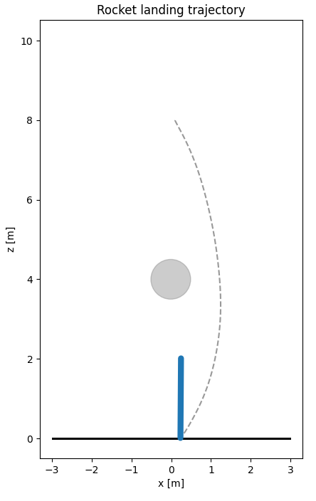
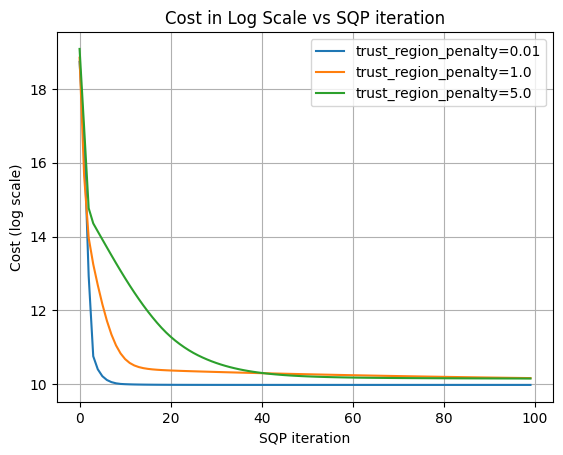
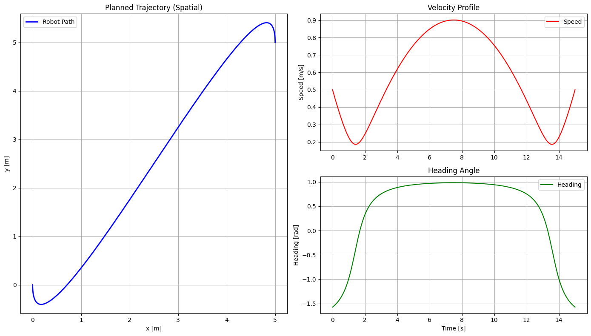
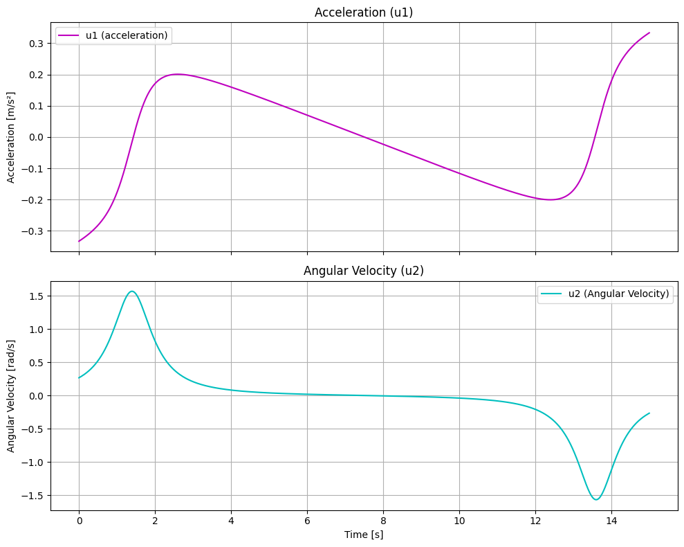
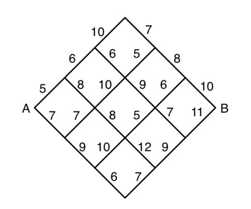
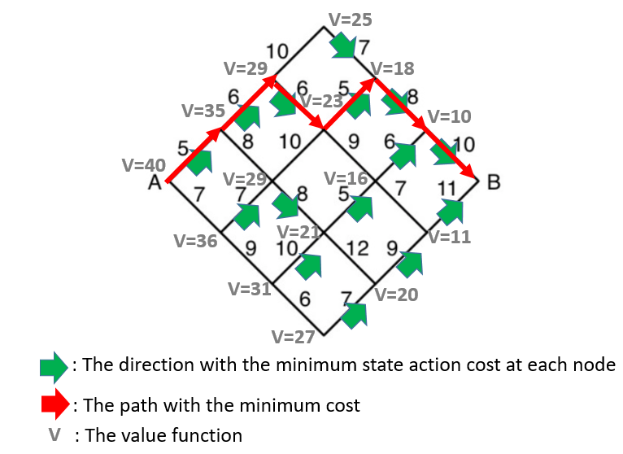
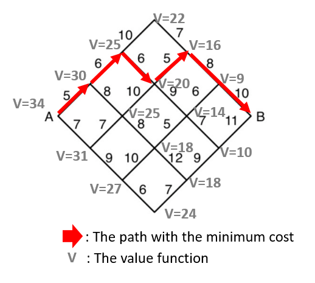

Homework 2 (Solutions)#
Trajectory optimization#
1. Rocket landing trajectory optimization#
You should complete notebook 05a_rocket_trajopt.ipynb first before answering this question.
(a)#
The trajectory optimization problem from part (iv) of the notebook may sometimes be infeasible, particularly if your initial guess is far from the feasible set. For instance, setting the initial control input to zero can easily lead to infeasibility.
To address this, introduce slack variables into the optimization problem to relax one or more of the constraints, thereby ensuring that the solver can always find a feasible solution. Specify which constraints you are choosing to relax (for example, state or control constraints), describe how you incorporate the slack variables, and explain how you penalize their use in the objective function to discourage excessive constraint violation. Provide your reasoning for choosing which constraints to relax.
Is this the only way to ensure feasibility? Briefly outline an alternative strategy, such as using a different form of regularization, constraint softening, or modifying the initial guess mechanism.
Solution
In this scenario, CVXPY may fail to find a feasible solution if the initial trajectory violates state constraints, such as intersecting obstacles. To address this, we introduce slack variables that relax specific constraints, ensuring the problem remains feasible under any initialization.
Relaxing the obstacle constraints via slack variables is particularly effective, as these are often the main source of infeasibility when using arbitrary initial guesses. If the solver starts from an infeasible point, it may otherwise be unable to make progress because all available updates violate the hard constraints. Allowing the trajectory to temporarily “pass through” obstacles using slack variables enables the solver to iteratively adjust the solution and eventually find a feasible, collision-free path.
By introducing slack variables \(\epsilon\) into the obstacle constraints, the problem in part (iv) can be reformulated as follows:
Here, \(\gamma\) is a large positive penalty coefficient that strongly discourages the use of slack variables except when absolutely necessary. Each time step along the trajectory has an associated slack variable. This heavy penalization ensures that constraint violations are only permitted when no feasible alternative exists for the optimization. However, it is important to note that if the initial guess is very far from feasibility, relaxing only a single set of constraints may not suffice to guarantee convergence. For implementation details and further discussion, please consult the solution code in the hw_rocket.ipynb solution notebook.
Alternative strategies include:
Feasible Initialization with Trust Regions: Choosing an initially feasible trajectory and incorporating a trust region helps keep the solver within the feasible set throughout the optimization. The trust region restricts the amount the trajectory can change at each iteration, preventing the solver from making steps that would immediately violate constraints or leave the domain of validity for the linearization.
Log-Barrier Methods: Instead of introducing explicit slack variables, inequality constraints of the form \(g(x) \leq 0\) can be relaxed by adding a log-barrier penalty term to the cost function: \(B(x) = \mu \sum \log(-g(x))\). As \(g(x)\) approaches zero from below (i.e., the constraint becomes tight), the barrier term grows rapidly, effectively preventing constraint violation by making such points extremely costly. Here, \(\mu > 0\) is a parameter that controls the strength of the barrier.
Constraint Softening: Similar in spirit to slack variables, hard constraints can be “softened” by moving them into the cost function as high-weight penalty terms. For example, an inequality constraint \(g(x) \leq 0\) might be replaced by adding \(\lambda \cdot \max(g(x), 0)^2\) to the objective, with a large penalty parameter \(\lambda\). This discourages—but does not absolutely prevent—constraint violations, providing a more flexible approach while maintaining tractability.
(Optional) Feel free to implement your proposed formulation verify that it indeed performs what you expect it to do.
Solution
Please refer to the hw_rocket.ipynb solution notebook for the implementation.
Adding slack variables exclusively to obstacle constraints is insufficient for finding a feasible solution. In addition to relaxing obstacle constraints, this implementation introduces slack variables for \(\theta\), which penalizes the cost of high-angle maneuvers. Similarly, a slack variable for altitude is included to maintain feasibility. To achieve a smooth trajectory, the cost matrices were tuned to balance the trade-off between constraint satisfaction and control effort.
Figure 1: Trajectory of the rocket with fine-tuned parameters.

(b)#
How does the choice of the trust region penalty weighting affect the convergence rate towards a (locally) optimal solution. Run some experiments and provide some plots to demonstrate the relationship between trust region penalty weights and convergence rate.
Solution
Figure 1 illustrates the cost function on a logarithmic scale as a function of the iteration count. The results demonstrate that the case with a 0.01 penalty converges significantly faster than the 5.0 penalty case. Based on these observations, it can be concluded that a higher trust region penalty leads to a slower convergence rate.
However, when penalty is too high, the algorithm may not coverge fast enougth to find the local optimum or leave the infeasible regeon due to the corresponding small step size. (In the solution code, it happen when the penalty was set to 10). Conversely, if the problem’s non-convexity is high, an insufficiently low penalty may cause the solver to “overshoot” the local optimum. This leads to oscillations or even divergence, as the linear approximation loses its validity when moving too far from the current linearization point.
Figure 1: Cost in Log Scale vs SQP iteration for different trust region penalties.

2. Expressing trajectory optimization with linear dynamics as quadratic programs.#
(a)#
Consider the following trajectory optimization problem
In this problem, you will express the above trajectory optimization problem as a quadratic program of the form
Let \(z = \begin{bmatrix} x_0 & x_1 & \dots & x_N & u_0 & u_1 & \dots & u_{N-1} \end{bmatrix}^T\).
(i)#
Rewrite the dynamics constraints \(x_{k+1} = A_k x_k + B_k u_k\) for \(k = 0, \ldots, N-1\) in the quadratic program form \(A_\text{dyn} z = b_\text{dyn}\). Clearly define the structure and dimensions of \(A_\text{dyn}\) and \(b_\text{dyn}\) in terms of \(z\). Explicitly specify how variables are arranged and how each time step’s dynamics are represented within this equality constraint.
Solution
Rearrage the dynamics constraints for each time step, such that:
where \(x\in R^n\), \(u\in R^m\), \(A\in R^{n \times n}\) and \(B\in R^{n \times m}\).
Stack equations together and rearrange it in terms of z:
The equation can be written as \(A_\mathrm{dyn} z = b_\mathrm{dyn}\) where \(z\in R^{(N+1)n+Nm}\) and \(b_\mathrm{dyn}\in R^{Nn}\), \(A_\mathrm{dyn}\in R^{Nn\times ((N+1)n+Nm)}\).
(ii)#
Express the initial condition constraint \(x_0 = x_\mathrm{init}\) in the linear equality form \(A_\text{init}z = b_\text{init}\). Clearly specify the structure and dimensions of \(A_\text{init}\) and \(b_\text{init}\) based on how the decision variable \(z\) is defined. Describe precisely which elements of \(z\) these matrices select and how they enforce the initial state constraint.
Solution
Chose \(A_\mathrm{init}\):
where \(I \in R^n\) and \(A_\mathrm{init} \in R^{n \times ((N+1)n+Nm)}\) such that:
where \(x_\mathrm{init} = b_\mathrm{init} \in R^n\).
(iii)#
Using your answers from parts (i) and (ii), clearly write how the full equality constraint \(Az = b\) can be constructed by combining the dynamic constraints and initial condition constraints. Explicitly specify how \(A_\text{dyn}\), \(b_\text{dyn}\), \(A_\text{init}\), and \(b_\text{init}\) are stacked or concatenated to form the complete \(A\) and \(b\) matrices in the quadratic program format.
Solution
By vertically stacking the initial condition constraint and the dynamics constraints, \(A_\mathrm{init}z=b_\mathrm{init}\) on the top of the first row in \(A_\mathrm{dyn}z = b_\mathrm{dyn}\):
Expanding this into the full block-matrix form yields:
The equation is simplfied as \(Az = b\), where z remains in \(R^{(N+1)n+Nm}\), \(b\in R^{(N+1)n}\) and \(A\in R^{((N+1)n) \times ((N+1)n+Nm)}\)
(iv)#
Rewrite the state inequality constraints \(G_k x_k + h_k \leq 0\) for all \(k = 0, \ldots, N\) in the standard quadratic program form \(G_\text{ineq} z \leq h_\text{ineq}\). Clearly specify the structure, dimensions, and arrangement of \(G_\text{ineq}\) and \(h_\text{ineq}\) in terms of the decision variable \(z\). Explicitly describe how each time step’s constraint is embedded in \(G_\text{ineq}\) and \(h_\text{ineq}\), making clear which parts of \(z\) are involved for each \(k\).
Solution
Rearrage the constraints for each time step:
where \(x_k\in R^n\), \(G_k\in R^{n \times n}\) and \(h_k\in R^{n \times m}\).
By stacking these constraints according to the definition of \(z\), we obtain the following block-matrix structure:
The equation is simplfied as \(G_\mathrm{ineq} z = h_\mathrm{ineq}\), where \(z\in R^{(N+1)n+Nm}\), \(h_\mathrm{ineq}\in R^{(N+1)n}\) and \(G_\mathrm{ineq}\in R^{(N+1)n \times ((N+1)n+Nm)}\).
(v)#
Rewrite the control input (actuator) constraints \(u_{\min} \leq u_k \leq u_{\max}\) for \(k = 0, \ldots, N-1\) in the standard quadratic program form \(G_\text{u} z \leq h_\text{u}\). Clearly specify the structure, dimensions, and arrangement of \(G_\text{u}\) and \(h_\text{u}\) in terms of the decision variable \(z\). Explicitly describe how each time step’s control constraint is embedded in \(G_\text{u}\) and \(h_\text{u}\), making clear which parts of \(z\) are involved for each \(k\).
Solution
Decompose the double-sided inequality into two separate constraints for each time step
where \(u_k\), \(u_{max}\) and \(u_{min}\) \(\in R^m\)
By stacking these for all \(k\) and arranging them to correspond with the \(z\), we obtain the following block-matrix structure:
The equation is simplfied as \(G_\mathrm{u} z \leq h_\mathrm{u}\) where \(z\in R^{(N+1)n+Nm}\), \(h_\mathrm{u}\in R^{2Nm}\) and \(G_\mathrm{u}\in R^{2Nm \times ((N+1)n+Nm)}\).
(vi)#
Using your answers from parts (iv) and (v), write how the complete inequality constraint \(Gz \leq h\) is formed by combining the state and control input constraints. Explicitly specify how \(G_\text{ineq}\), \(h_\text{ineq}\), \(G_\text{u}\), and \(h_\text{u}\) are stacked or concatenated to produce the full \(G\) and \(h\) matrices in the quadratic program format. Clearly indicate their structure and dimensions in terms of the decision variable \(z\).
Solution
The full matrices are constructed by stacking the individual constraint components as follows:
Expanding this into the block-matrix structure based on the \(z\) yields:
The equation is simplified as \(Gz = h\), where z remains in \(R^{(N+1)n+Nm}\), \(h\in R^{(N+1)n + 2Nm}\) and \(G\in R^{((N+1)n + 2Nm) \times ((N+1)n+Nm)}\)
(vi)#
Express the cost function
in the standard quadratic program form
Clearly describe the structure, dimensions, and block-diagonal form of the matrix \(P\) in terms of \(Q\), \(R\), and \(Q_N\), and specify how \(p\) and \(r\) should be chosen to match the given objective. Explain which blocks of \(P\) correspond to which states \(x_k\) and control inputs \(u_k\) for all \(k\).
Solution
Because the objective is a pure quadratic form with no linear or constant terms, we set \(p=0\) amd \(r=0\). The matrix \(P\) is structured as follows:
where left top block has the dimension of \(Nn \times Nn\) and right botton block has the dimension of \(Nm \times Nm\). \(P \in R^{((N+1)n+Nm)}\):
(b)#
Now, consider the following modified trajectory optimization problem, inspired by the SQP approach from notebook 5a. This problem includes additional tracking terms in both the state and control input objectives.
Here,
\(x_k\) denotes the state at time step \(k\),
\(u_k\) is the control input at time step \(k\),
\(A_k\), \(B_k\), and \(C_k\) describe the linearized dynamics at each time step,
\(Q\), \(R\), \(Q_\mathrm{trp}\), \(R_\mathrm{trp}\), and \(Q_N\) are the state, input, trust region penalty, and terminal cost weights, respectively,
\(\tilde{x}_k\) and \(\tilde{u}_k\) are reference state and input trajectories,
\(x_\mathrm{init}\) and \(x_\text{goal}\) are the prescribed initial and desired final states,
\(G_k\), \(h_k\) encode stagewise state constraints,
\(u_{\min}\), \(u_{\max}\) are input bounds.
Based on your formulations from part (a), explicitly write out all the matrices and vectors—such as \(P\), \(p\), \(r\), \(A\), \(b\), \(G\), and \(h\)—that define the standard Quadratic Program (QP) form of this trajectory optimization problem. Clearly express each in terms of the problem data and parameters presented above, and specify how these matrices/vectors are constructed from the trajectory optimization problem setup.
Solution
Assume \(x \in R^{n}\) and \(u \in R^{m}\).
Define \(z\in R^{(N+1)n + Nm}\) :
Expand the cost function at time k:
cost at final:
Notice \(Q_{trp}\), \(R_{trp}\) and \(Q_{N}\) are symmetric, so:
Combine similar terms:
The quadratic terms are represented by \(\frac{1}{2}z^T P z\). The matrix P \(\in R^{((N+1)n + Nm) \times ((N+1)n + Nm)}\) is a block diagonal matrix with the structure:
The linear terms can be written as \(p^T z\), where \(p \in R^{(N+1)n+Nm}\):
The constant terms r in the equation \( \frac{1}{2}z^T P z + p^T z + r \) is given by: $\( r =\sum_{k=0}^{N-1} \Big[ \tilde{x}_k^T Q_{trp}\, \tilde{x}_k + \tilde{u}_k^T R_{trp}\, \tilde{u}_k \Big] + x_{goal}^T Q_N x_{goal} \)$
Set dynamic constraints as:
Equality constraints are derived by following the procedure in problem a.(i), a.(ii) and a.(iii) yields:
where \(A \in R^{(N+1)n \times ((N+1)n + Nm) }\) and \(b \in R^{(N+1)n}\).
Follow the procedure in problem a.(iv), a.(v) and a.(vi) yields \(Gz \leq h\), where:
where \(G_k\in R^{q \times n}\), \(h\in R^{(N+1)q + 2Nm}\) and \(G\in R^{((N+1)q + 2Nm) \times ((N+1)n+Nm)}\)
3. Differential flatness (Adapted from AA 274 from Stanford University).#
(Note: Technically, this is not a trajectory optimization problem, as there is no objective function to minimize over possible trajectories. Rather, it is a trajectory generation problem, where the goal is to construct a feasible trajectory that satisfies the system constraints.)
In this problem, you will explore methods for generating smooth trajectories for non-holonomic wheeled robots, and in the process, gain familiarity with important geometric properties of these systems.
A non-holonomic system is one for which the allowable instantaneous motions are subject to constraints, even though the system can ultimately reach any position and orientation through a sequence of admissible moves. A classic example is a car: while it can eventually maneuver to any pose in the plane, it cannot move directly sideways at any instant, since its velocity is constrained to the direction its wheels are oriented.
Your objective is to synthesize a smooth, feasible trajectory for such a system by leveraging the concept of differential flatness, which enables explicit trajectory construction and control design in the presence of these motion constraints.
Differential flatness
Differential flatness is a structural property of certain nonlinear systems that allows the state and control inputs to be expressed entirely in terms of a specific set of variables, called flat outputs, and their time derivatives.
For a system to be differentially flat, there must exist a mapping such that:
where \(x\) is the state, \(u\) is the control input, and \(y\) is the flat output. This property is powerful for trajectory planning because it effectively “inverts” the dynamics. Instead of solving a complex boundary value problem by integrating the equations of motion forward, a designer can simply define a smooth path for the flat outputs. Since the system is flat, the necessary control inputs and intermediate orientations required to follow that path can be calculated algebraically, ensuring that the resulting trajectory is physically feasible by construction.
Consider the dynamically extended unicycle model.
The system dynamics are given by:
Here,
The state vector is \(\mathbf{x} = \begin{bmatrix} x & y & \theta & v \end{bmatrix}^T\), where
\((x, y)\) is the Cartesian position of the robot’s center,
\(\theta\) is its heading angle measured from the \(x\)-axis, and
\(v\) is the forward velocity of the robot along its main axis.
The control input vector is \(\mathbf{u} = \begin{bmatrix} a & \omega \end{bmatrix}^T\), where
\(a\) is the linear acceleration (rate of change of \(v\)), and
\(\omega\) is the angular velocity (rate of change of \(\theta\)).
This model captures the essential constraints of non-holonomic wheeled robots and serves as a foundation for planning and controlling their trajectories.
(a)#
Derive explicit expressions for \(\ddot{x}\) and \(\ddot{y}\) in terms of the system variables \((v, \theta, a, \omega)\). Starting from the given dynamics of the extended unicycle model, show how the second derivatives of \(x\) and \(y\) can be written as:
Solution
Taking the time derivatives of \(\dot{x}\) and \(\dot{y}\), yields:
substitute \(\dot{v}\) and \(\dot{\theta}\) with \(a\) and \(\omega\) gives:
write the equations in matrix form:
(b)#
Given values for \(v\), \(\theta\), \(\ddot{x}\), and \(\ddot{y}\), under what circumstances can you solve for \(a\) and \(\omega\) uniquely? Clearly state the mathematical condition(s) required for a unique solution to exist, and briefly explain the reason behind these conditions.
Solution
For a square matrix, finding a unique solution to \(Ax=b\) requires \(A\) to be invertible, which is equivalent to the following statements:
\(det(A) \neq 0\)
A is full rank.
The columns of A are linearly independent.
The rows of A are linearly independent.
We can determine whether a unique solution exists by examining the determinant of \(A\). In the unicycle case, a unique solution exists if:
Therefore, a unique solution for \((a,\omega)\) exists whenever the velocity satisfies
If \(v \neq 0\), the mapping from \((a,\omega)\) to \((\ddot{x},\ddot{y})\) is invertible, so both inputs uniquely determine the accelerations.
If \(v = 0\), the second column of \(A\) vanishes, and the system becomes rank-deficient. In this case, \(\omega\) has no effect on \((\ddot{x},\ddot{y})\), so the solution is not unique.
(c)#
Let us define the flat outputs for the system as \(\begin{bmatrix} x & y \end{bmatrix}^T\). Recall that the dynamics of the extended unicycle model allow us to interpret the second derivatives \(\ddot{x}\) and \(\ddot{y}\) as virtual control inputs: specifically, \(\begin{bmatrix} u_1 & u_2 \end{bmatrix}^T = \begin{bmatrix} \ddot{x} & \ddot{y} \end{bmatrix}^T\). By selecting appropriate values for the flat outputs and their second derivatives, it becomes possible to algebraically compute the corresponding physical control inputs, \(a\) and \(\omega\).
Suppose we wish to design a trajectory for the robot’s position in the plane, that is, a desired path \(\begin{bmatrix} x(t) & y(t) \end{bmatrix}^T\) specified as a function of time. One convenient approach is to parameterize this trajectory using basis functions, such as polynomials:
where \(\psi_i(t)\) for \(i=0,\dots, n\) are chosen basis functions (e.g., polynomials), and \(x_i\), \(y_i\) are scalar coefficients to be determined. The goal is to select these coefficients such that the resulting \(x(t)\) and \(y(t)\) satisfy desired initial/final conditions and possibly other requirements (e.g., velocity, boundary constraints).
(i)#
Consider the polynomial basis functions:
Formulate a system of linear equations in the coefficients \(x_i\) and \(y_i\), for \(i=0,\dots, 3\), so that the resulting trajectories \(x(t)\) and \(y(t)\) satisfy the following initial and terminal boundary conditions (with \(t_\text{f} = 15\)):
Initial conditions:
\[ x(0) = 0, \qquad y(0) = 0, \qquad v(0) = 0.5, \qquad \theta(0) = -\frac{\pi}{2} \]Final conditions:
\[ x(t_\text{f}) = 5, \qquad y(t_\text{f}) = 5, \qquad v(t_\text{f}) = 0.5, \qquad \theta(t_\text{f}) = -\frac{\pi}{2} \]
Provide the explicit linear equations relating the coefficients to these boundary conditions. Then, solve for the values of \(x_i\) and \(y_i\) that satisfy these constraints.
Solution
Define polynomials function for \(x(t)\) and \(y(t)\):
Their derivatives with respect to time, which correspond to the velocity components \(v \cos(\theta)\) and \(v \sin(\theta)\) are:
Applying initial and final conditions:
The above equations can be expressed as a system of linear equations
solving for \(x_i\) and \(y_i\) yields:
The resulting trajectory functions are:
(ii)#
Explain why it is not possible to specify \(v(t_\text{f}) = 0\) in this formulation. What issues would arise if you tried to enforce this condition? Provide a mathematical or geometric justification.
Solution
We can find \(v\) and \(\theta\) in terms of \(x(t)\), \(y(t)\) and their time derivatives:
If we enforce the terminal condition \(v\) to be zero, both \(\dot{x}(t)\) and \(\dot{y}(t)\) become zero, and \(\theta\) become singular.
Geometrically, when the robot is completely stationary, there is no instantaneous direction of motion, so the orientation cannot be uniquely determined from the flat outputs. As a result, the mapping from the flat outputs \((x,y)\) back to the system states and control inputs is no longer invertible at \(v=0\).
Therefore, the differential flatness formulation becomes singular when \(v(t_f)=0\), which is why this terminal condition cannot be imposed directly in this trajectory parameterization.
(iii)#
Given the polynomial coefficients you have obtained, derive explicit expressions for the heading angle \(\theta(t)\) and the speed \(v(t)\) as functions of the trajectory \([x(t), y(t)]\) and their time derivatives.
Solution
Using the polynomial coefficients found in part (i), the trajectories are:
Taking time derivatives gives the velocity components:
The speed is therefore
which gives
The heading angle is
or explicitly,
(iv)#
Generate plots of the resulting trajectory by displaying \(x(t)\) and \(y(t)\) in the plane, as well as time profiles of \(\theta(t)\) and \(v(t)\) for \(t \in [0, t_\text{f}]\). Confirm graphically and/or numerically that the trajectory meets the prescribed initial and final conditions for position, heading, and velocity. Additionally, plot the time histories of the control inputs \(a(t)\) and \(\omega(t)\) along the trajectory.
Note: You may find that in the case with velocity constraints, the solution obtained above could violate them. There are several ways to address this.
Increase the number of basis polynomials and solve a constrained trajectory optimization problem. This is akin to a pseudospectral trajectory optimization approach; we can provide a trivial objective function and simply find a feasible solution.
Increase \(t_\text{f}\), essentially “stretching out” the trajectory, until the constraints are satisfied.
Re-scale velocities the problematic portions of the trajectory while keeping the geometric properties the same.
Take a look at the Stanford AA 274 homework if you are curious to learn more about the third option.
Solution
The implementation and visualization of the trajectory, states, and control inputs are provided in the hw2_differential_flatness.ipynb solution notebook.
Figure 1: Trajectory of the unicycle.

Figure 2: Controls v.s time

Sequential Decision Making#
1. Dynamic programming: Shortest` path in a graph#
(Adapted from Stanford AA 203 homework).

Consider the shortest path problem in Figure above where it is only possible to travel to the right and the numbers represent the travel times for each segment. The control input is the decision to go “up” or “down” at each node. Given that state transitions are deterministic in a low-dimensional state space, we will use dynamic programming to develop a closed-loop policy for each node in the grid.
(a)#
Use dynamic programming (DP) to find the shortest path from A to B.
Solution
By applying dynamic programming backward from the destination node \((B)\), we compute the optimal cost-to-go (value function) for each node layer by layer. The value function at each node represents the minimum remaining travel cost from that node to the destination.
At each node, we evaluate the possible control actions (“up” or “down”) and select the action that minimizes the sum of:
the immediate edge cost, and
the optimal future cost-to-go of the next node.
The resulting value functions and optimal directions for each node are illustrated in Figure 1, with the globally optimal path from A to B highlighted in red.
Figure 1: Finding Optimal path using DP.

(b)#
Consider a generalized version of the shortest path problem in Figure 1 where the grid has \(n\) segments on each side. Find the number of computations required by an exhaustive search algorithm (i.e., the number of routes that such an algorithm would need to evaluate) and the number of computations required by a DP algorithm (i.e., the number of DP evaluations). For example, for \(n = 3\), an exhaustive search algorithm requires 20 computations, while the DP algorithm requires only 15.
Solution
Getting from point A to point B in an n-by-n grid requires \(n\) units in the downward direction and \(n\) units in the upward direction.
The total number of steps is always 2n. The problem of finding every possible route is equivalent to finding every possible arrangement of \(n\) “D”s and \(n\) “U”s in a sequence of length \(2n\).
For example: when n = 3, the possible sequences are:
where D represents the downward movement and U represents the upward movement.
The question becomes a combination problem: Choose which n positions out of 2n are D’s.
Therefore, for an exhaustive search algorithm, the number of computations required is:
For a DP algorithm, the number of computations equals the number of nodes whose value functions need to be evaluated. This is equal to the total number of nodes except for node B. A grid with \(n\) segments per side has \(n+1\) nodes along each side. Therefore, the number of computations is given by:
(c)#
Now consider an extended version of the problem where, instead of only moving one edge-length at a time, you may move in a given direction (either up-right or down-right) for 1, 2, or 3 consecutive edge-lengths in a single action. The cost structure is as follows:
A move covering 1 edge-length: sum of the edge’s cost minus 1.
A move covering 2 edge-lengths: sum of the two edges’ costs minus 2.
A move covering 3 edge-lengths: sum of the three edges’ costs minus 3.
For instance, starting from node A:
Moving up-right for 1 edge-length has a cost of \(5-1\),
For 2 lengths, the cost is \(5 + 6 - 2\),
For 3 lengths, the cost is \(5 + 6 + 10 - 3\).
Using this cost and action setup, employ dynamic programming to compute the optimal (minimum-cost) path from node A to node B.
Solution
Let’s define the following notation:
\(V(i,j)\) : The value function at “\(i\)th” layer across and the “\(j\)th” node (indexed from the top).
\(Q(i,j,d,\ell)\) : The state-action cost for moving in direction “\(d\)” for “\(\ell\)” edge-lengths from node \((i,j)\).
\(U\) : Moving upward
\(D\) : Moving downward
For example: \(Q(4,4,U,2)\) represents the cost of moving upwards for 2 edge-lengths starting from the 4th layer across, and 4th node from the top.
The value function at any given node is computed by selecting the minimum Q among all possible actions.
An example is provided as below:
Starting from the 6th layer (second to last layer from B), and top node:
There are no other action costs that need to be computed since the only viable action is \(D\). Therefore, the value function \(V(6,1) = 9\).
Next, compute the cost at the second node of the 6th layer:
There are no other action costs that need to be computed since the only viable action is \(U\). Therefore, the value function \(V(6,2) = 10\).
Moving back one layer to the 5th layer, and we compute the cost for the top node of the 5th layer.
The cost by moving downward for 1 edge-length:
The cost by moving downward for 2 edge-lengths.
The value function V(5,2) = 16. Taking either action \((D,1)\) or \((D,2)\) is equivalent.
Repeating this backward induction process from B to A, the costs evaluated at each node are summarized below:
The resulting value functions and the optimal path are illustrated in figure 2.
Figure 2: Optimal path using DP with multi-length actions.
